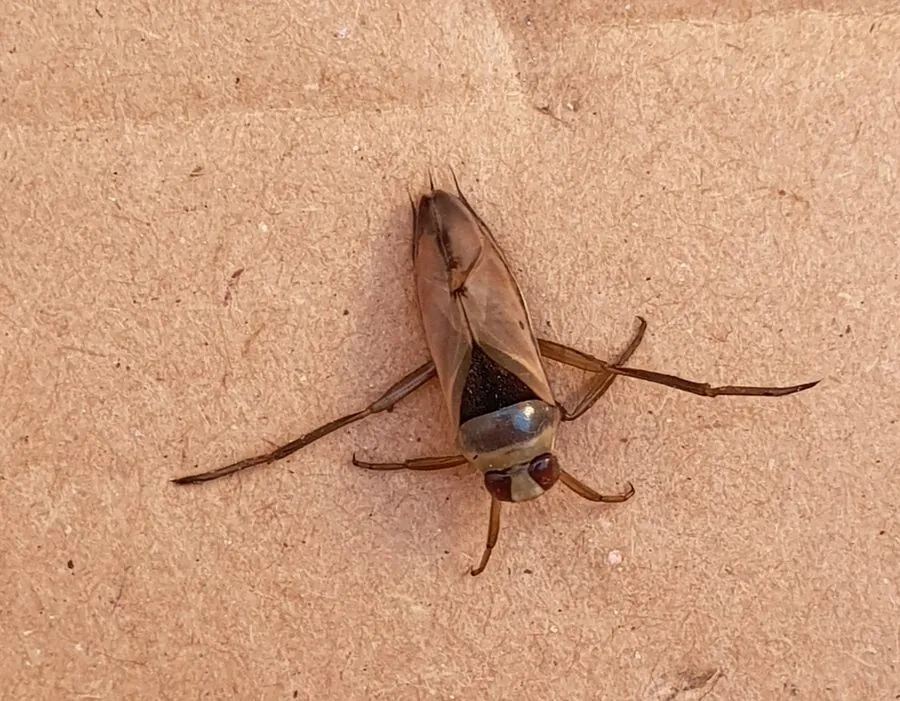

昆虫 · 动物界
仰泳蝽 Notonecta glauca

腹部朝上、用桨状后足划水的捕食性水生蝽，常在池塘中捕食水生昆虫和蝌蚪，被捉住时还会用口针刺人。
- 分类
- 门节肢动物门纲昆虫纲目半翅目科仰泳蝽科属仰泳蝽属
- 栖息环境
- 池塘、沟渠、水田等静水水体，多在水面附近活动
- 地理分布
- 欧洲、北非和亚洲的静水水体，中国各地均有分布
- 保护级别
- 暂无评估
物种志
仰泳蝽成虫体长约 15 mm，体呈船形，背面隆起，腹面平坦。身体背面灰白或淡黄，腹面深褐，这种反荫蔽的体色使它从水下和水面看都难以被发现。后足长而扁平，边缘生有长毛，像两把桨。
仰泳蝽广泛分布于欧洲、北非和亚洲的静水水体，常见于池塘、沟渠和水田。它终生在水中生活，游泳时腹部朝上、用后足同步划水，靠腹面的气膜呼吸，每隔一段时间要浮到水面换气。它是凶猛的捕食者，捕食水生昆虫、蝌蚪和小鱼，用刺吸式口器注入消化液后再吸食。仰泳蝽的刺吸能给人带来明显的疼痛，因此又被称为“水蜂”。它对水质变化敏感，可作为水体环境的指示生物。
形态与习性
- 食性捕食水生昆虫、蝌蚪和小鱼
- 体长约 15 mm
- 游泳腹部朝上，用桨状后足同步划水
- 呼吸靠腹面气膜呼吸，需定期浮到水面换气
- 防御被捉住时用口针刺人，疼痛明显
- 环境指示对水质变化敏感，可用于水体监测
趣味知识
- 仰泳蝽游泳时肚皮朝天，全靠两把“桨”一样的后足划水。
- 它腹面朝上是为了利用反荫蔽，让水下的捕食者难以发现。
- 被仰泳蝽刺一下会疼很久，所以民间叫它“水蜂”。